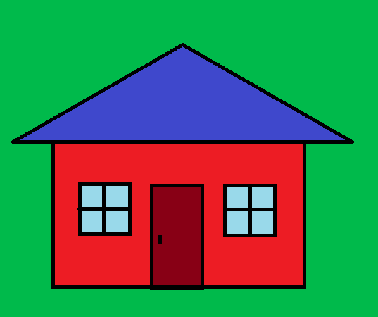

Hello there! If you're not familiar with website development you may be confused with all these fancy terms and acronyms.
HTML and CSS are used to build the visuals of a website. HTML stands for HyperText Markup Language and CSS stands for Cascading Style Sheet.
HTML and CSS work together like an engineer and an architect. So say we're building a metaphorical house.
The engineer would say a house needs walls, doors, 2 windows and a roof! This is like the HTML file. It contains the main structure and the elements of a website.
The architect would then say: The house should be painted red, the roof painted blue, the door central with the windows positioned one on each side!
This is like the CSS file. It denotes the positoning, colouring and styling of elements described in the HTML file.
Then there's Javascript; a programming language. It's kinda like the electrician. They'll wire up your house so that the lights turn on when you push a button.
So now that you kinda know how a website is put together, i'll try and describe in abit more detail about how the CSS file determines the location of each element.
By default, the elements from the HTML file are brought onto the webpage using 'static' positioning. This means that the elements all just kinda stack on top of each other.
Like a big messy pile of building materials if our webpage was a construction site. And yes.. we're still building that metaphorical house, but it's just a messy pile right now.
So what do we do? We need the architectural drawings! The CSS file! It'll dimension and position all our elements. Relative, absolute and fixed positioning are just different starting points for our dimensions
Fixed positioning would mean the dimensions are taken from the site boundary - our webpage's viewport.
Absolute positioning is like the dimensions of a doorknob relative to the door itself. Or the positioning of a window relative to the wall it's embedded in. The dimensions are taken from the first parent element that is not 'static'.
Relative positioning is kinda like moving furniture shown on an architectural drawing. For example, moving a wardrobe 500mm to the right. The dimension is relative to itself; relative to it's default static position.
However, its original static position will be maintained as a placeholder. Which means anything stacked on top of it won't also move.
There's a bunch more to CSS, HTML and web development but you're probably too busy building that metaphorical house now... well at least I am.